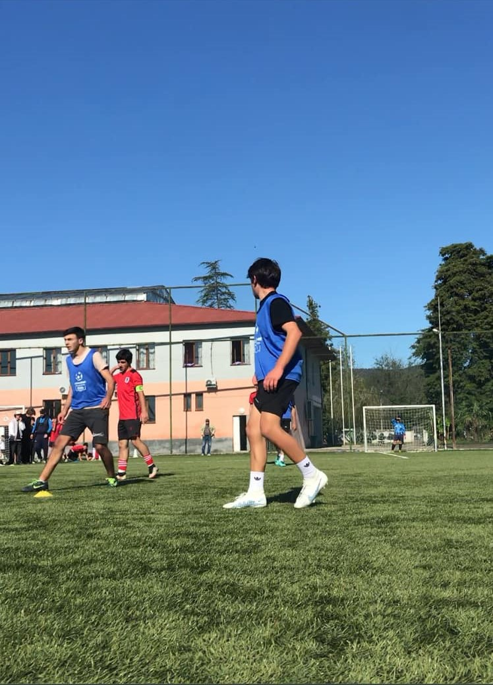

ჩემი საყვარელი სპორტია ფეხბურთი. ფეხბურთი ძალიან მომწონს, რადგან ეს არის სწრაფი, დინამიური და გუნდური თამაში, რომელიც ყოველთვის ძალიან მხიარულად და საინტერესოდ მიმდინარეობს. ფეხბურთი არა მხოლოდ ფიზიკურ დატვირთვას, არამედ აზროვნებასაც საჭიოროებს, რადგან მინდორზე ტექნიკა და ძალა არ არის საკმარისი მხოლოდ საჭიროა გუნდის კარგი თანამშრომლობა და გადაწყვეტილებები.
მიყვარს ფეხბურთის თამაში და ხშირად მეგობრებთან ერთად ვთამაშობ თავისუფალ დროს. ძალიან კარგად ვერთობი , ფეხბურთშივცდილობთ მთელი ძალისხმევა ჩავდოთ გავიმარჯვოთ. ფეხბურთი არ არის მხოლოდ სპორტი განსახილველად ეს შესაძლებლობაა, დავხარჯო ენერგია, გავხდე აქტიური
